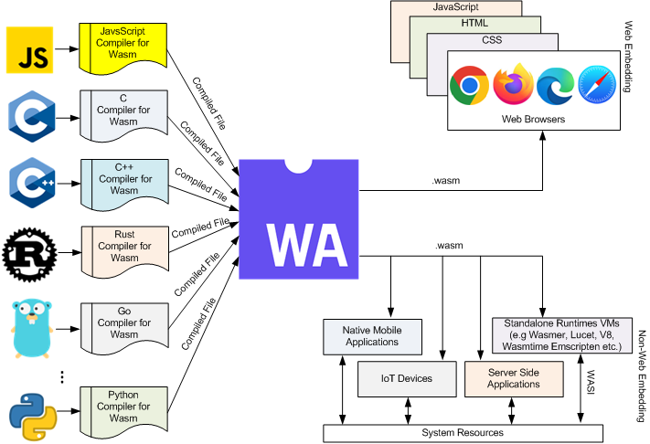

WASM is used for multiple reasons in a browser environment. The most famous reason is to convert a legacy app to an online app.
Such apps can be written in any language. For example, there is a web app named Figma,spiled into a .wasm file before then getting executed by the browser in the .wasm's compacted format
These files can also be used elsewhere.
Enclosed here is a flowchart describing the conversion of code to WASM via JavaScript, and then its final destination. The source can be found on the final page.
